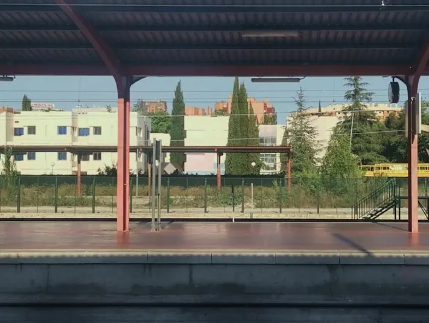

La poesía, si es que existe #1
Train to Machado
Train to Machado es una proyección de vídeo acompañada del recitado libre del poema Esa fue la voz que escuché. Ponis que se agitan como los árboles en las montañas otoñales, de Óscar Curieses.
Este trabajo fue ejecutado anteriormente como pieza de audioperformance junto a la formación AMC313 y apareció en el CD El grito es un movimiento inacabado, incluido en el libro Hay una jaula en cada pájaro (Ya lo dijo Casimiro Parker, 2013). En esta obra, Antonio Machado rememora desde un tren los poemas que le dedican Raymond Carver y Derek Walcott, años después de su muerte, mientras observa el paisaje de Castilla.